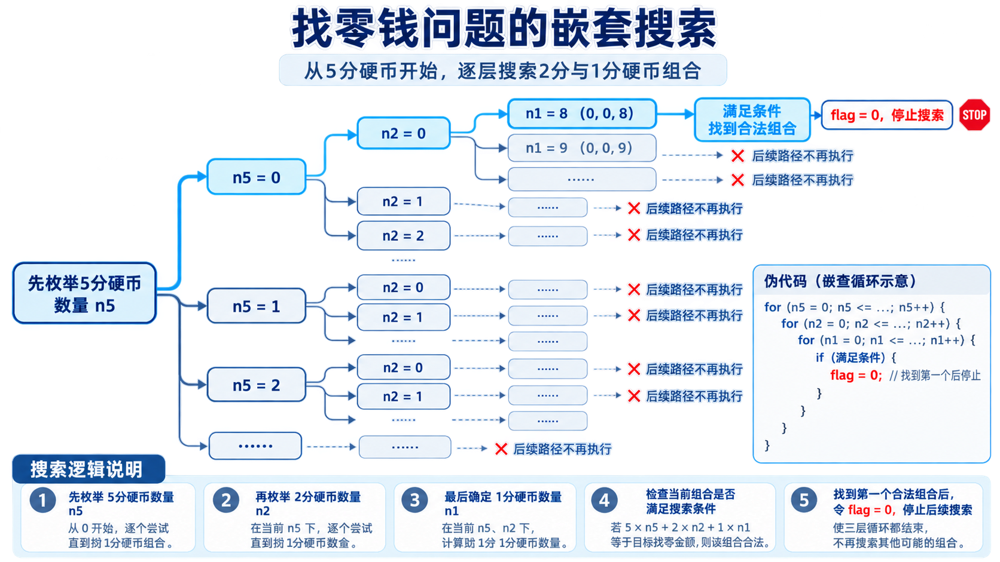

程序设计基础 · 第4次课 · 第二次课 · 第3课时
从搬砖问题和找零钱问题，理解“系统尝试所有可能”的程序设计思想
如果答案不知道在哪里，程序怎样系统地寻找？
把可能的取值逐个尝试。
只保留满足条件的组合。
删除不必要的枚举，减少搜索范围。
break 和 flag| 步骤 | 要回答的问题 |
|---|---|
| 1. 定义变量 | 有哪些未知量？ |
| 2. 确定范围 | 每个未知量可能取哪些值？ |
| 3. 写出约束 | 什么组合才是合法答案？ |
| 4. 输出结果 | 找到后是全部输出，还是只要最优/第一个？ |
例如在教学示例中，若要从一组候选测量方案中寻找满足“人数、次数、总记录数”约束的方案，也可以先枚举所有可能组合。
某工地需要搬运砖块，男人一人搬 3 块，女人一人搬 2 块，小孩两人搬 1 块。
如果想用 \(n\) 人正好搬 \(n\) 块砖，问有哪些搬法？
men：男人数量women：女人数量children：小孩数量men + women + children == n3*men + 2*women + 0.5*children == n为避免浮点比较，也可把砖数约束整体乘以2。
3m + 2w + 0.5c == n
6m + 4w + c == 2n
cnt = 0;
for (men = 0; men <= n; men++) {
for (women = 0; women <= n; women++) {
for (children = 0; children <= n; children++) {
if (men + women + children == n &&
6 * men + 4 * women + children == 2 * n) {
printf("men=%d, women=%d, children=%d\n", men, women, children);
cnt++;
}
}
}
}这是最直接、最容易理解的枚举方式。
men 和 women，还需要枚举
children 吗？
nmenwomenchildren = n - men - womenmen_limit = n / 3;
women_limit = n / 2;
for (men = 0; men <= men_limit; men++) {
for (women = 0; women <= women_limit; women++) {
children = n - men - women;
if (children >= 0 &&
6 * men + 4 * women + children == 2 * n) {
printf("men=%d, women=%d, children=%d\n", men, women, children);
}
}
}💡 课堂互动：引导学生用 AI 验证从 O(N^3) 降低到 O(N^2) 的数学降维思路。
本演示工具用于对比搬砖问题中“三重循环暴力穷举”与“优化后二重循环”在尝试次数上的效率差异：
(men, women, children)，并实时判定约束条件。
有足够数量的 5 分、2 分和 1 分硬币，现在要用这些硬币来支付一笔小于 1 元的零钱
money，问至少要用多少个硬币？
输入零钱 money，输出硬币的总数量和相应面额的硬币数量。
n5、n2、n1 分别表示5分、2分、1分硬币数量。
5*n5 + 2*n2 + n1 == money
硬币总数尽量少，优先尝试面值大的硬币。
flag = 1;
for (n5 = money / 5; n5 >= 0 && flag == 1; n5--) {
for (n2 = (money - n5 * 5) / 2; n2 >= 0 && flag == 1; n2--) {
for (n1 = money - n5 * 5 - n2 * 2; n1 >= 0 && flag == 1; n1--) {
if (n5 * 5 + n2 * 2 + n1 == money) {
printf("n5=%d, n2=%d, n1=%d, total=%d\n", n5, n2, n1, n5+n2+n1);
flag = 0;
}
}
}
}
这里的 flag 用于让多层循环都感知“已经找到答案”。
break 不够？break只能跳出当前所在的一层循环。
flag 控制多层循环
每一层循环条件都检查 flag == 1，找到答案后统一停止。
💡 课堂互动：对比 AI 给出的 flag 标记法与 goto 语句退出法在代码可读性上的优势。

forwhiledo-whilebreak
continue
嵌套循环
| 问题类型 | 核心变量 | 典型题 |
|---|---|---|
| 输入值控制 | score/pulse |
一批数据平均值 |
| 计算值控制 | item, eps |
格里高里公式 |
| 状态迭代 | x1, x2, x |
Fibonacci |
| 枚举筛选 | k, flag |
区间素数 |
| 组合搜索 | 多个枚举变量 | 搬砖、找零钱 |
💡 课堂互动：同桌讨论 AI 提炼出的不变量优化原则，并在课件总结图中定位适用场景。
写循环前，先画出重复关系。